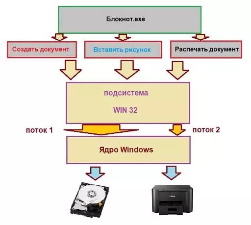
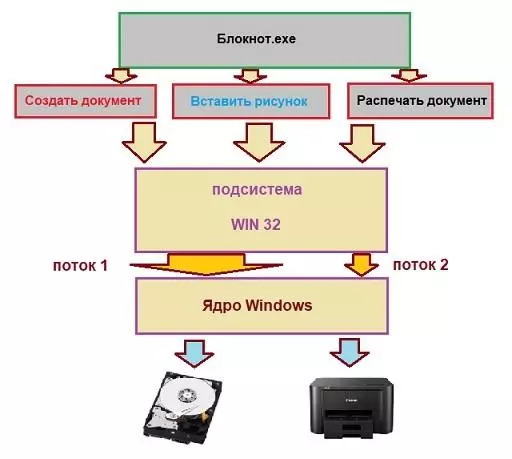
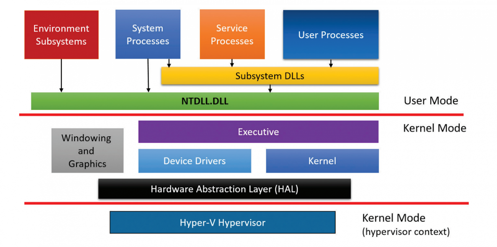

Операционные системы
Что такое операционная система
Операционная система (ОС, OS, operating system) — это набор программ, обеспечивающих работу компьютера или другого устройства и взаимодействие с ним пользователя.
Любые компьютеры, будь то ПК, ноутбуки, смартфоны или планшеты, состоят из двух групп компонентов:
Аппаратной части — процессора, оперативной памяти, клавиатуры, компьютерной мыши и так далее.
Программного обеспечения — системного и прикладного софта.
Чтобы они понимали друг друга, а пользователь мог взаимодействовать с устройством (запускать приложения), необходим посредник — операционная система.ОС выполняет много функций:
создаёт удобный для пользователя интерфейс;
стандартизирует доступ к устройствам ввода и вывода, например к клавиатуре и дисплею;
координирует распределение ресурсов между запущенным программным обеспечением;
Компоненты операционной системы
Операционная система представляет собой многослойную структуру, в центре которой находится ядро. Поверх него располагаются драйверы и службы, а оболочкой выступает пользовательский интерфейс.
Ядро
Это основа операционной системы. Ядро представляет собой часть программного обеспечения, работающую напрямую с компонентами компьютера.
Также оно отвечает за управление процессами, памятью компьютера, файловой системой, обработку входных и выходных данных.
Драйверы
Это программное обеспечение, благодаря которому операционная система работает с подключённым в устройстве «железом».
Без драйверов она не узнает, что могут делать видеокарта, клавиатура, принтер и другие комплектующие и как правильно отправлять к ним запросы.
Пользовательский интерфейс
Бывает графическим (GUI) и командным (CLI).
Графический интерфейс (GUI) представляет собой визуальную среду с кнопками, иконками, меню и диалоговыми окнами.
Именно он используется по умолчанию в Windows, macOS, Android, iOS и средах рабочих столов Linux.
Командный интерфейс (CLI) использовался в DOS, а сейчас реализован в виде терминала в Linux и macOS и командной строки в Windows, в которых пользователь вводит команды с клавиатуры.
CLI даёт возможность гибко управлять системой, используя функции и скрипты. Его чаще всего используют разработчики и системные администраторы.
Виды операционных систем
Все существующие ОС можно классифицировать по нескольким признакам: разрядности, типу лицензии и области применения.
По разрядности
32-битные (x32). Адресуют до 4 ГБ оперативной памяти и могут запускать программы, написанные только под 32-битную систему.
64-битные (x64). Ограничение по оперативной памяти — до 16 ТБ. Такие ОС поддерживают 64-битные программы, а 32-битные запускают через эмулятор.
По области применения
Серверные операционные системы используются на серверах. Они включают в себя инструменты для обмена данными между компьютерами через сетевые соединения. Такими ОС являются Windows Server и Unix-системы для серверов.
Клиентские — системы для использования на автономных компьютерах или устройствах, подключённых к серверам. К примеру, Windows 11, macOS 14.3 или Ubuntu Linux.
Мобильные операционные системы разработаны для смартфонов и планшетов. Они позволяют работать с мобильными приложениями, управлять настройками сотовой сети и энергопотреблением. К ним относят Android и iOS.
История развития операционных систем
История развития операционных систем насчитывает около 70 лет. За это время простейший набор заданий для мейнфреймов, написанный на перфоленте, эволюционировал в то, что сейчас мы видим на экране компьютера.
Всю историю можно разделить на три этапа.
Первый этап (1955–1965 годы)
История операционных систем начинается в 1955 году, когда инженер General Motors Роберт Л. Патрик и программист North American Airlines Оуэн Мок разработали для IBM 704 GM-NAA I/O.
Её иногда называли системой ввода — вывода.
Второй этап (1965–1980 годы)
В 1969 году в исследовательской лаборатории Bell Labs разработали ОС Unix. Она — основа современных операционных систем.
Unix поддерживала язык C и протокол TCP/IP. Это первая ОС, которую можно было установить на сервер. К ней могли подключиться компьютеры-клиенты, позволяя одновременно работать нескольким пользователям.
Третий этап (1980 — настоящее время)
В это время появляются персональные компьютеры, доступные не только корпорациям и университетам, но и обычным пользователям.
В 1984 году компания Apple выпускает первую систему для своих Macintosh под названием System 1, созданную на основе Alto OS.
С её помощью Стив Возняк планировал избавить пользователей от сложности существующих ОС и вывести компьютеры компании на массовый рынок.
Популярные операционные системы
С момента разработки первой операционной системы прошло больше 60 лет.
Было выпущено огромное количество разных ОС, но к сегодняшнему дню популярность обрели продукты компаний-гигантов и модификации операционных систем с открытым исходным кодом.
Windows. Знакомая большинству операционная система с многолетней историей. Её главные преимущества — это дружелюбный интерфейс, обширная совместимость с программами, играми и периферией. Это сделало её самой популярной системой среди пользователей ПК и ноутбуков. Но она является платной, закрытой и требовательной к «железу».
macOS — ОС для Macbook и iMac. Компания Apple постаралась над архитектурой своей «оси» и максимально оптимизировала её под используемые комплектующие.
В первые годы macOS преимущественно выбирали специалисты творческих профессий — видеомонтажёры, журналисты и другие, — но сейчас многие покупают устройства компании из-за их стабильной работы и личных предпочтений к дизайну.
Любителям тонкой настройки операционной системы и инструментов с открытым исходным кодом подойдут бесплатные Linux-подобные ОС. В них удобно администрировать серверы, работать с базами данных и вообще делать всё то же самое, что и в Windows и macOS.
Android распространяется с открытым исходным кодом. Большое количество компаний разрабатывают на его основе собственные интерфейсные оболочки для своих Android-смартфонов.
Такие преимущества ОС, как понятное управление, возможности широкой настройки интерфейса, большой магазин приложений, завоевали «Андроиду» популярность у производителей мобильных устройств и других портативных гаджетов.
iOS устанавливается только на мобильные устройства от Apple. Вместе они образуют единую экосистему, что является одновременно и плюсом, и минусом.
Сами по себе они работают быстро и стабильно, отлично синхронизируясь с другими гаджетами компании. Но при взаимодействии со сторонними ОС могут возникать ошибки.
Система является закрытой, поэтому кастомизировать её не получится, а приложения можно установить только из официального магазина — App Store.

Компоненты Windows, или из чего Windows состоит
 Как работает Windows: программная оболочка = Shell
Это часть операционной системы, которая завязана и с пользователем и с приложениями. Именно шелл позволяет нам запускать флешки, устанавливать программы, запускать word-вый документ и печатать в нём, сохраняя в любое дозволенное системой место, которое заметно проводнику. Shell – это и File Explorer (проводник Windows), и контрольная панель Пуск, и окна Свойства системы и Мой компьютер. Человек или пользователь знает шелл как различные инструменты пользовательского интерфейса, такие как диалоговые окна, ярлыки и иконки, контекстные меню дополнительных команд.
А для программ шелл это команды и процедуры, которые эти программы могут вызывать: печать информацию через принтер, читать данные из баз, отображать что-то на экране.
Сам шелл состоит из нескольких подсистем, которые управляются в пользовательском режиме. Такой режим означает, что эти подсистемы имеют очень ограниченный доступ к системной информации, и доступ к “железу” может осуществляться ТОЛЬКО через системные службы (службы самой Windows). Одна из таких подсистем – подсистема безопасности Win32 – обеспечивает вход в систему (регистрацию пользователя), сохранение и распространение его привилегий на файлы и папки, а также другие функции безопасности. Абсолютно все программы и приложения “здороваются с Windows” только через подсистему Win32.
Как работает Windows : Ядро
Как и в других ОС, отвечает за работу с оборудованием, которое внутри компьютера находится или во время работы к компьютеру “пристёгивается”. Режим ядра полномочий имеет гораздо больше. Никакая программа, установленная в Windows, не имеет доступа к “железу” напрямую – только через шелл, который, в свою очередь, посылает все запросы к ядру. Такая система взаимодействия обеспечивает стабильную работу ОС. Это чем-то напоминает ресторан: перед тем как заказать блюдо, вам нужно позвать официанта (к шеф-повару и на саму кухню вас не пропустят).
Как работает Windows: программная оболочка = Shell
Это часть операционной системы, которая завязана и с пользователем и с приложениями. Именно шелл позволяет нам запускать флешки, устанавливать программы, запускать word-вый документ и печатать в нём, сохраняя в любое дозволенное системой место, которое заметно проводнику. Shell – это и File Explorer (проводник Windows), и контрольная панель Пуск, и окна Свойства системы и Мой компьютер. Человек или пользователь знает шелл как различные инструменты пользовательского интерфейса, такие как диалоговые окна, ярлыки и иконки, контекстные меню дополнительных команд.
А для программ шелл это команды и процедуры, которые эти программы могут вызывать: печать информацию через принтер, читать данные из баз, отображать что-то на экране.
Сам шелл состоит из нескольких подсистем, которые управляются в пользовательском режиме. Такой режим означает, что эти подсистемы имеют очень ограниченный доступ к системной информации, и доступ к “железу” может осуществляться ТОЛЬКО через системные службы (службы самой Windows). Одна из таких подсистем – подсистема безопасности Win32 – обеспечивает вход в систему (регистрацию пользователя), сохранение и распространение его привилегий на файлы и папки, а также другие функции безопасности. Абсолютно все программы и приложения “здороваются с Windows” только через подсистему Win32.
Как работает Windows : Ядро
Как и в других ОС, отвечает за работу с оборудованием, которое внутри компьютера находится или во время работы к компьютеру “пристёгивается”. Режим ядра полномочий имеет гораздо больше. Никакая программа, установленная в Windows, не имеет доступа к “железу” напрямую – только через шелл, который, в свою очередь, посылает все запросы к ядру. Такая система взаимодействия обеспечивает стабильную работу ОС. Это чем-то напоминает ресторан: перед тем как заказать блюдо, вам нужно позвать официанта (к шеф-повару и на саму кухню вас не пропустят).
Ядро состоит из двух компонентов:
слой аппаратных абстракций HAL – hardware abstraction layer
– (ближайший к железу уровень)
уровень исполнительных служб (обеспечивает взаимодействие подсистем в пользовательском режиме со слоем аппаратных абстракций)
Что здесь нужно запомнить? Логика работы ясна уже из описания: исполнительные службы Windows работают с оборудованием при помощи самого HAL и драйверов для конкретного устройства.
Такой принцип работы устанавливается незаметно для глаз пользователя в момент установки Windows на компьютер. В тот самый момент, когда мы видим строки состояния установки компонентов и служб/программ, и строится структура слоя HAL на основе процессора, который в материнской плате вашей машины установлен. То есть привычные процессы во время установки Windows предстают теперь в таком свете:
приглашение к компиляции HAL
То, что появится после установки ОС, перенести на другой компьютер один в один не получится:
для нормальной работы в новой конфигурации до– или переустановка отдельных драйверов или целого их пакета неизбежна.Как работает Windows: Данные конфигурации
Ну, а всем операционным системам нужно место, где данные о программах и оборудовании, а также настройках и предпочтении пользователя можно хранить. Нужно хранить информацию и о том, как пользователь хочет, чтобы Windows и программы выглядели, где хранить скачиваемое и создаваемое и т.д. Для всего этого (или для почти всего)
Windows использует … правильно, реестр. Некая информация хранится в файлах инициализации (характерные файлы с расширением .ini и .inf).
 И когда установленная программа запускается, перед появлением какого-либо окна она сначала посмотрит реестр и прочитает эти файлы, и только потом уже запуск приложения можно считать успешным.
Как Windows управляет программами?
Если программа установлена, мы подразумеваем, что её остов где-то хранится. Чаще всего это жёсткий диск или флешка.
Когда пользователь запускает программу, некоторые из её файлов копируются в оперативную память. Так появляется процесс. практически в том виде, каком мы видим его в Диспетчере задач или Process Explorer.
Процессом можно назвать программу, запущенную вместе с соответствующими системными службами и другими ресурсами. Ресурсы нередко включают в себя и другие программы, включая захват дополнительных ячеек оперативной памяти для временного хранения данных. Когда процесс делает запрос к системе по типу “Мне нужны ресурсы!”, подразумевается, что программа обращается именно к подсистеме Win32. Так появляется поток данных.
Поток – это единичная, выделенная задача (запустить или создать документ, вставить рисунок из буфера обмена, распечатать документ на принтере и т.д.). Схематично это выглядит так

Как видите, потоков может быть несколько. Это называется многопоточность/мультипоточность: например, окна браузеров могут запускаться в нескольких вкладках или нескольких отдельных окнах. Выражаясь технически, в обоих случаях речь идёт о нескольких разных процессах браузер.exe.
И когда установленная программа запускается, перед появлением какого-либо окна она сначала посмотрит реестр и прочитает эти файлы, и только потом уже запуск приложения можно считать успешным.
Как Windows управляет программами?
Если программа установлена, мы подразумеваем, что её остов где-то хранится. Чаще всего это жёсткий диск или флешка.
Когда пользователь запускает программу, некоторые из её файлов копируются в оперативную память. Так появляется процесс. практически в том виде, каком мы видим его в Диспетчере задач или Process Explorer.
Процессом можно назвать программу, запущенную вместе с соответствующими системными службами и другими ресурсами. Ресурсы нередко включают в себя и другие программы, включая захват дополнительных ячеек оперативной памяти для временного хранения данных. Когда процесс делает запрос к системе по типу “Мне нужны ресурсы!”, подразумевается, что программа обращается именно к подсистеме Win32. Так появляется поток данных.
Поток – это единичная, выделенная задача (запустить или создать документ, вставить рисунок из буфера обмена, распечатать документ на принтере и т.д.). Схематично это выглядит так

Как видите, потоков может быть несколько. Это называется многопоточность/мультипоточность: например, окна браузеров могут запускаться в нескольких вкладках или нескольких отдельных окнах. Выражаясь технически, в обоих случаях речь идёт о нескольких разных процессах браузер.exe.
Краткая история Windows и что у нее под капотом
Несколько дней назад в сеть просочился образ ранней версии Windows 11. Различные издательства провели тесты по производительности и пришли к неутешительному выводу: Windows 11 в среднем работает хуже, чем Windows 10. Но расстраиваться рано! Проблемы производительности могут быть связаны с «сыростью» слитого образа и нюансами совместимости с текущими программами. Так или иначе, 24 июня состоится официальная презентация нового поколения операционных систем Windows, которая, возможно, даст ответы на многие вопросы. Если сегодня у вас есть настроение для ностальгии, предлагаем вам окунуться в мир Windows: познакомиться с историей, как менялась ось и что у нее внутри.
 История Windows
История Windows
 В начале 80 годов прошлого века компания IBM работала над персональным компьютером на базе процессора Intel 8088. С середины 70 годов компания Microsoft была основным поставщиком Basic для восьмибитных микрокомпьютеров.
Когда IBM обратилась к Microsoft для лицензирования Basic для их нового компьютера IBM PC, Microsoft согласилась, а также посоветовала обратиться к компании Digital Research для лицензирования операционной системы CP/M. Но, получилось так, что глава Digital Research не нашел в своем графике времени для встречи для IBM, и IBM снова обратилась к Microsoft, теперь уже с просьбой решить вопрос операционной системы для IBM PC.
Microsoft купила клон ОС CP/M у компании Seattle Computer Products и перенесла её на IBM PC. Итоговым названием получившейся ОС стало MS-DOS 1.0.
Первые продукты с названием «Windows» от Microsoft не были операционными системами. Это были графические среды для MS-DOS. На фоне успеха, в том числе и коммерческого, пользовательского интерфейса на Apple Lisa, компания решила реализовать графический интерфейс на IBM PC с MS-DOS. В отличии от относительно дешевых IBM PC, Apple Lisa стоили дорого (почти 10 тысяч долларов), и немногие покупатели могли позволить купить их. Microsoft решила занять нишу дешевых компьютеров с графическим интерфейсом. При этом низкая стоимость достигалась экономией на комплектующих и более низкая производительность, по сравнению с Lisa, избежать не получилось. Так, в 1985, 1987 и в 1990 выходят первые три версии Windows — 1.0, 2.0 и 3.0. Причем за первые шесть месяцев после релиза Windows 3.0 было продано более 1 миллиона экземпляров.
Дальнейшее развитие Windows можно разделить на два направления — Windows на базе MS-DOS и Windows на базе NT.
В начале 80 годов прошлого века компания IBM работала над персональным компьютером на базе процессора Intel 8088. С середины 70 годов компания Microsoft была основным поставщиком Basic для восьмибитных микрокомпьютеров.
Когда IBM обратилась к Microsoft для лицензирования Basic для их нового компьютера IBM PC, Microsoft согласилась, а также посоветовала обратиться к компании Digital Research для лицензирования операционной системы CP/M. Но, получилось так, что глава Digital Research не нашел в своем графике времени для встречи для IBM, и IBM снова обратилась к Microsoft, теперь уже с просьбой решить вопрос операционной системы для IBM PC.
Microsoft купила клон ОС CP/M у компании Seattle Computer Products и перенесла её на IBM PC. Итоговым названием получившейся ОС стало MS-DOS 1.0.
Первые продукты с названием «Windows» от Microsoft не были операционными системами. Это были графические среды для MS-DOS. На фоне успеха, в том числе и коммерческого, пользовательского интерфейса на Apple Lisa, компания решила реализовать графический интерфейс на IBM PC с MS-DOS. В отличии от относительно дешевых IBM PC, Apple Lisa стоили дорого (почти 10 тысяч долларов), и немногие покупатели могли позволить купить их. Microsoft решила занять нишу дешевых компьютеров с графическим интерфейсом. При этом низкая стоимость достигалась экономией на комплектующих и более низкая производительность, по сравнению с Lisa, избежать не получилось. Так, в 1985, 1987 и в 1990 выходят первые три версии Windows — 1.0, 2.0 и 3.0. Причем за первые шесть месяцев после релиза Windows 3.0 было продано более 1 миллиона экземпляров.
Дальнейшее развитие Windows можно разделить на два направления — Windows на базе MS-DOS и Windows на базе NT.
Windows 9x
Windows на базе MS-DOS или Windows 9x не были первыми ОС от Microsoft, но они продолжали «старые традиции» и были построены на основе 16-битного кода MS-DOS. В августе 1995 года была выпущена Windows 95 — первая система семейства Windows 9x. Она уже была полноценной операционной системой с соответствующими возможностями. Однако у системы были проблемы с безопасностью (например, не было «администратора») и с изоляцией приложений. Зависание 16-битного приложения приводило к блокировке всей системы.
Проблемы со стабильностью достались и Windows 98 и Windows ME, которые отличались от выпуска 95 года рядом небольших обновлений.
Windows NT
 В целом, к концу 80-х годов в Microsoft появилось понимание о необходимости разработки операционной системы не на базе MS-DOS. Параллельно с разработкой софта, связанного с MS-DOS, Microsoft наняла команду инженеров из компании DEC для разработки новой 32-битной операционной системы. Главой группы стал Дэйв Катлер — один из главных разработчиков ОС VMS. Новая система была названа NT — от сокращения New Technology. Основной упор при разработке NT делался на безопасность и надежность системы, а также на совместимость с Windows на MS-DOS.
Так получилось, что опыт при разработке VMS повлиял на NT и сходство между ними стало причиной спора между DEC и Microsoft. По итогу спор был решен во внесудебном порядке.
Первая система Windows называлась Windows NT 3.1 и была выпущена в 1993 году. Это была первая ОС от Microsoft. Индекс 3.1 был выбран для соответствия Windows 3.1 на MS-DOS. Эта версия не имела особого успеха. Для NT требовалось больше памяти, 32-разрядных приложений на рынке было мало, возникали проблемы с совместимостью драйвером. Достичь поставленных целей смогли в NT 3.5. А первым серьезным обновлением для NT стала версия 4.0 в 96 году. Теперь эта система была мощна, надежна и безопасна, а также обеспечивала тот же интерфейс, что и Windows 95 (которая к тому моменту была чрезвычайно популярной).
В 2000 году вышла новая версия Windows — Windows 2000. Она развивала идеи, заложенные в системы NT. Был добавлена технология Plug-and-Play, управление электропитанием и улучшен интерфейс пользователя.
Успех Windows 2000 задал вектор развития для следующего поколения — Windows XP. В «хрюшке» Microsoft улучшила совместимость, интерфейс стал более дружелюбным.
Стратегия Microsoft завоевывать аудиторию уже знакомыми системами дала плоды — за несколько лет Windows XP была установлена на сотнях миллионах ПК. Эпоха MS-DOS подошла к концу.
Следующий проект Microsoft пал жертвой собственных амбиций.
Через пять лет после Windows XP, в 2006 году на свет вышла Windows Vista. В ней был переделан графический интерфейс, переработаны и добавлены функциональные возможности в плане безопасности.
Была улучшена производительность, надежность.
Первоначальные планы Microsoft по поводу Vista были настолько обширны, что через несколько лет после начала разработки проект пришлось сильно ограничить.
Vista включала в себе 70 миллионов строк кода, часть которого составлял «причесанный» код XP.
Неудача Vista отчасти с тем, что она вышла не в то время. На 2006 год пришелся бум недорогих компьютеров, которые не могли обеспечить достаточную для Vista производительность.
В целом, к концу 80-х годов в Microsoft появилось понимание о необходимости разработки операционной системы не на базе MS-DOS. Параллельно с разработкой софта, связанного с MS-DOS, Microsoft наняла команду инженеров из компании DEC для разработки новой 32-битной операционной системы. Главой группы стал Дэйв Катлер — один из главных разработчиков ОС VMS. Новая система была названа NT — от сокращения New Technology. Основной упор при разработке NT делался на безопасность и надежность системы, а также на совместимость с Windows на MS-DOS.
Так получилось, что опыт при разработке VMS повлиял на NT и сходство между ними стало причиной спора между DEC и Microsoft. По итогу спор был решен во внесудебном порядке.
Первая система Windows называлась Windows NT 3.1 и была выпущена в 1993 году. Это была первая ОС от Microsoft. Индекс 3.1 был выбран для соответствия Windows 3.1 на MS-DOS. Эта версия не имела особого успеха. Для NT требовалось больше памяти, 32-разрядных приложений на рынке было мало, возникали проблемы с совместимостью драйвером. Достичь поставленных целей смогли в NT 3.5. А первым серьезным обновлением для NT стала версия 4.0 в 96 году. Теперь эта система была мощна, надежна и безопасна, а также обеспечивала тот же интерфейс, что и Windows 95 (которая к тому моменту была чрезвычайно популярной).
В 2000 году вышла новая версия Windows — Windows 2000. Она развивала идеи, заложенные в системы NT. Был добавлена технология Plug-and-Play, управление электропитанием и улучшен интерфейс пользователя.
Успех Windows 2000 задал вектор развития для следующего поколения — Windows XP. В «хрюшке» Microsoft улучшила совместимость, интерфейс стал более дружелюбным.
Стратегия Microsoft завоевывать аудиторию уже знакомыми системами дала плоды — за несколько лет Windows XP была установлена на сотнях миллионах ПК. Эпоха MS-DOS подошла к концу.
Следующий проект Microsoft пал жертвой собственных амбиций.
Через пять лет после Windows XP, в 2006 году на свет вышла Windows Vista. В ней был переделан графический интерфейс, переработаны и добавлены функциональные возможности в плане безопасности.
Была улучшена производительность, надежность.
Первоначальные планы Microsoft по поводу Vista были настолько обширны, что через несколько лет после начала разработки проект пришлось сильно ограничить.
Vista включала в себе 70 миллионов строк кода, часть которого составлял «причесанный» код XP.
Неудача Vista отчасти с тем, что она вышла не в то время. На 2006 год пришелся бум недорогих компьютеров, которые не могли обеспечить достаточную для Vista производительность.
Технические аспекты
Чтобы осветить все технические аспекты и тонкости операционной системы Windows понадобится не менее 1000 страниц. Для особо любопытных советуем 7-е издание «Внутреннего устройства Windows« Марка Руссиновича, специалиста по внутреннему устройству Windows. Также можно почитать «Современные операционные системы« Эндрю Таненбаума и «Operating System Concepts«: в обеих книгах есть главы, посвященные Windows.
Здесь же ограничимся рассмотрением инструментов взаимодействия приложений пользователя с операционной системой (Windows API) и архитектуры «оси».
Архитектура

Во многих многопользовательских операционных системах сама ОС отделяется от приложений. Код ядра ОС выполняется в привилегированном режиме процессора (режим ядра). Для него доступны системные данные и оборудование. В непривилегированном режиме (пользовательский режим) выполняется код приложений. Ему предоставляется ограниченный набор интерфейсов и ограниченный доступ к системным данным. Прямой доступ к оборудованию заблокирован. При вызове программой пользовательского режима системной функции процессор выполняет специальную команду, переключающую вызывающий поток (последовательность команд внутри процесса, планируемая Windows для исполнения) в режим ядра.
Когда системная функция завершается, операционная система переключает контекст потока обратно в пользовательский режим и дает возможность вызывающей стороне продолжить работу.
Четыре базовых типа процессов пользовательского режима:
Пользовательские процессы. Эти процессы относятся к одному из следующих типов: 32- или 64-разрядные приложения Windows (приложения Windows Apps, работающие на базе среды Windows Runtime в Windows 8 и выше, включаются в эту категорию), 16-разрядные приложения Windows 3.1, 16-разрядные приложения MS-DOS, 32- и 64-разрядные приложения POSIX. Заметим, что 16-разрядные приложения могут выполняться только в 32-разрядных версиях Windows, а приложения POSIX в Windows 8 уже не поддерживаются.
Процессы служб. В эту категорию входят процессы, являющиеся хостами для служб Windows (например, службы планировщика задач и диспетчер печати). Обычно к службам предъявляется требование независимости выполнения от входа пользователя. Многие серверные приложения Windows (например, Microsoft SQL Server и Microsoft Exchange Server) также включают компоненты, выполняемые как службы.
Системные процессы. Фиксированные процессы, такие как процесс входа или диспетчер сеансов, не являются службами Windows. Другими словами, они не запускаются диспетчером служб.
Серверные процессы подсистем среды. Такие процессы реализуют часть поддержки среды ОС, предоставляемой пользователю и программисту. Изначально в Windows NT было три подсистемы среды: Windows, POSIX и OS/2.
Подсистема OS/2 включалась только до Windows 2000, подсистема POSIX в последний раз была включена в Windows XP.Ultimate- и Enterprise-выпуски клиента Windows 7. Все серверные версии Windows 2008 R2 включают поддержку расширенной подсистемы POSIX, называемой SUA (Subsystem for UNIX-based Applications). Сейчас подсистема SUA не поддерживается и уже не включается как необязательное часть в версии Windows (Windows 10 версии 1607 включает подсистему Windows для Linux — WSL, Windows Subsystem for Linux).
Windows API
Windows API (Application Programming Interface) — это программный интерфейс пользовательского режима для Windows. До появления 64-разрядной версии операционной системы программный интерфейс 32-разрядных версий Windows назывался Win32 API в отличие от исходного 16-разрядного Windows API (программный интерфейс для исходных 16-разрядных версий Windows).
На данный момент термин Windows API или Win32 API относят как к 32-разрядным, так и к 64-разрядным версиям.
WinRT
В Windows 8 появился новый API и исполнительная среда поддержки Windows Runtime (WinRT).
WinRT состоит из платформенных сервисов, предназначенных для разработчиков приложений Windows Apps (приложения Windows Apps подходят для устройств, начиная от миниатюрных IoT-устройств до телефонов, планшетов, десктопных систем, ноутбуков и даже Xbox One и Microsoft HoloLens).